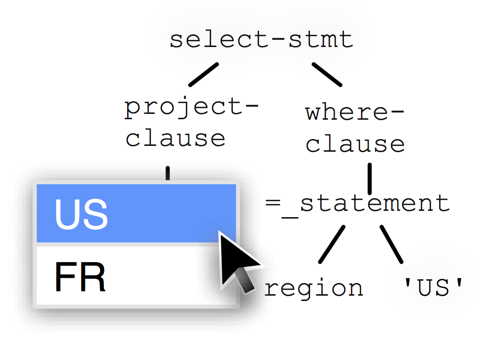
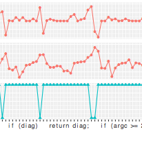
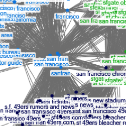
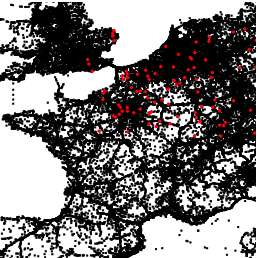

I am a postdoc at the WuLab, within the Data Science Institute of Columbia University, in New York. Previously, I was a PhD student at CWI and the University of Amsterdam (the Netherlands). I am interested in data exploration, data mining, visualization and more generally anything at the intersection of machine learning and data management.
Ongoing projects

Precision Interfaces: we are building a system to generate user interfaces automatically by mining SQL query logs and navigational data. This is a collaboration with Haoci Zhang (Tsinghua) and Eugene Wu (Columbia). See our HILDA paper for an overview.

Neural Debugging: we are building tools to help people understand and debug deep neural networks. So far we have focused on RNNs and LSTMs, but there is more to come. This is a collaboration with Kevin Lin, Salim M'jahad, Conder Shou and Eugene Wu (Columbia).
PhD project: Automatic Advisors for Data Exploration
The aim of my PhD was to develop automatic advisors, to help users explore and understand their databases. These advisors could detect statistical patterns, and exploit them to recommend queries and visualizations. For instance, Claude [CIKM 2015] uses feature selection and information theory to recommend views. Charles [CIDR 2015], then its successor Blaeu [TKDE 2015] exploit cluster analysis and subspace search. Also, instead of well-structured databases, users may have to deal with text files, or even worse, tweets. Raimond [ICWE 2015] extracts and organizes quantitative data from social data.
You may access the full book here.
Advisor: Martin Kersten
Committee: Gerard Weikum, Bart
Goethals, Maarten de Rijke, Peter
Adriaans and Marcel Worring
Some of the the ideas in the thesis were implemented in a R package called findviews, available on CRAN. Check it out!
Past Projects
Here are a few other projects I am involved in:

Social data analysis: we mine query logs and social data. This project has been ongoing since my internship at Microsoft Research, during summer of 2014 in Mountain View (CA). Then, I was under supervised by Omar Alonso.

TimeTrails, Spatiotemporal data warehouses for trajectory exploitation: we develop database technology to mine large volumns of GPS data. This project is collaboration with TomTom, funded by the Dutch organization COMMIT.

MonetDB: MonetDB is a very fast Open Source column-store.
Other Past Projects
- Before I started my PhD, I had a technology role at JPMorgan (investment banking) for a year.
- I wrote my Master's thesis in the database group of Uppsala University, in Sweden. I developed a Naive Bayes classifier for a DBMS, and used it on a stream of Twitter messages to detect emotions. You may find the text here.
- Between January and September 2015, I toured with a music band. We achieved a lot, I will happily share tour stories upon request.
Publications
2017
- Haoci Zhang, Thibault Sellam, Eugene Wu:
Precision Interfaces, HILDA@SIGMOD 2017 [pdf] - Eugene Wu, Fotis Psallidas, Zhengjie Miao, Haoci Zhang, Laura Rettig, Thibault Sellam:
Combining Design and Performance in a Data Visualization Management System, CIDR 2017 [pdf]
2016
- Thibault Sellam, Martin Hentschel, Vasilis Kandylas, Omar
Alonso:
e#: Sharper Expertise Detection from Microblogs, EDBT 2016 - Thibault Sellam, Martin Kersten:
Fast, Explainable View Detection to Characterize Exploration Queries, SSDBM 2016 [pdf] - Thibault Sellam, Martin Kersten:
Have a Chat with Clustine, Conversational Engine to Query Large Tables, HILDA@SIGMOD 2016 [pdf] - Thibault Sellam, Martin Kersten:
Ziggy: Characterizing Query Results for Data Explorers, VLDB 2016 (Demo Track) [pdf] - Thibault Sellam, Robin Cijvat, Richard Koopmanschap, Martin Kersten:
Blaeu: Mapping and Navigating Large Tables with Cluster Analysis, VLDB 2016 (Demo Track) [pdf] - Thibault Sellam, Martin Kersten:
80 New Packages to Mine Database Query Logs, [manuscript, vision paper] [pdf]
2015
- Thibault Sellam, Emmanuel Müller, Martin Kersten:
Semi-Automated Exploration of Data Warehouses, ACM CIKM 2015 (KM track) [pdf] - Thibault Sellam, Martin Kersten:
Cluster-Driven Navigation of the Query Space, IEEE TKDE 2015 [pdf, additional material] - Thibault Sellam, Omar Alonso:
Raimond: Quantitative Data Extraction from Twitter to Describe Events, ICWE 2015 [pdf]
2013
- Thibault Sellam, Martin Kersten:
Meet Charles, Big Data Query Advisor, CIDR 2013 [pdf, poster] - Thibault Sellam:
Fast Cartography for Data Explorers, PhD workshop@VLDB 2013 [pdf]
2012
- Holger Pirk, Thibault Sellam, Stefan Manegold, Martin Kersten:
X-device query processing by bitwise distribution, DaMoN@SIGMOD 2012 [pdf, poster] - Konrad Bösche, Thibault Sellam, Holger Pirk, René Beier, Peter
Mieth, Stefan Manegold:
Scalable Generation of Synthetic GPS Traces with Real-Life Data Characteristics, TPCTC@VLDB 2012 [pdf}